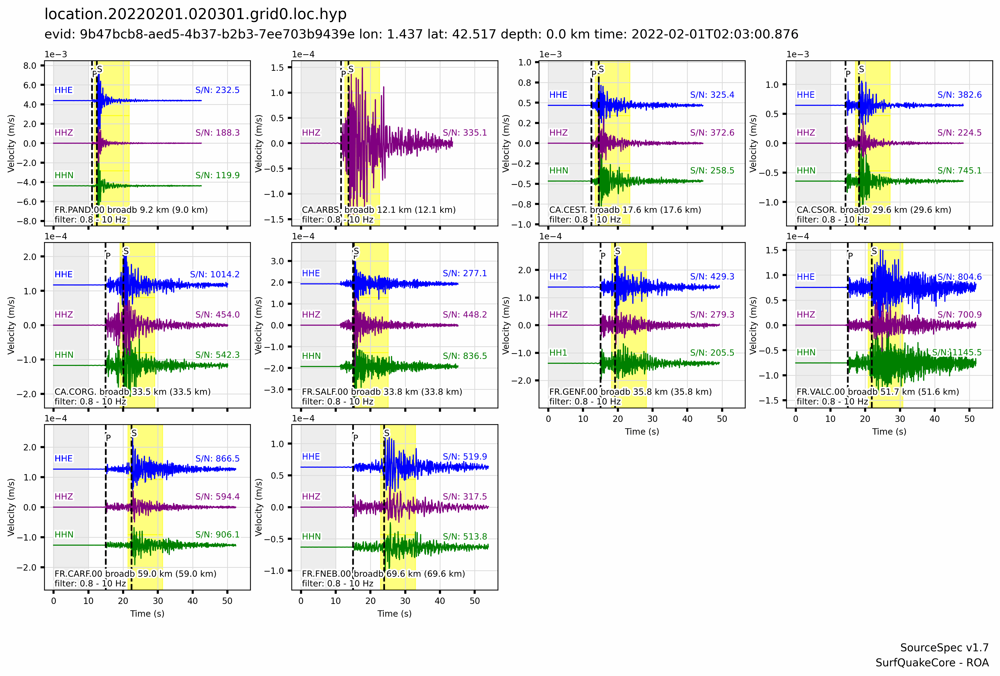
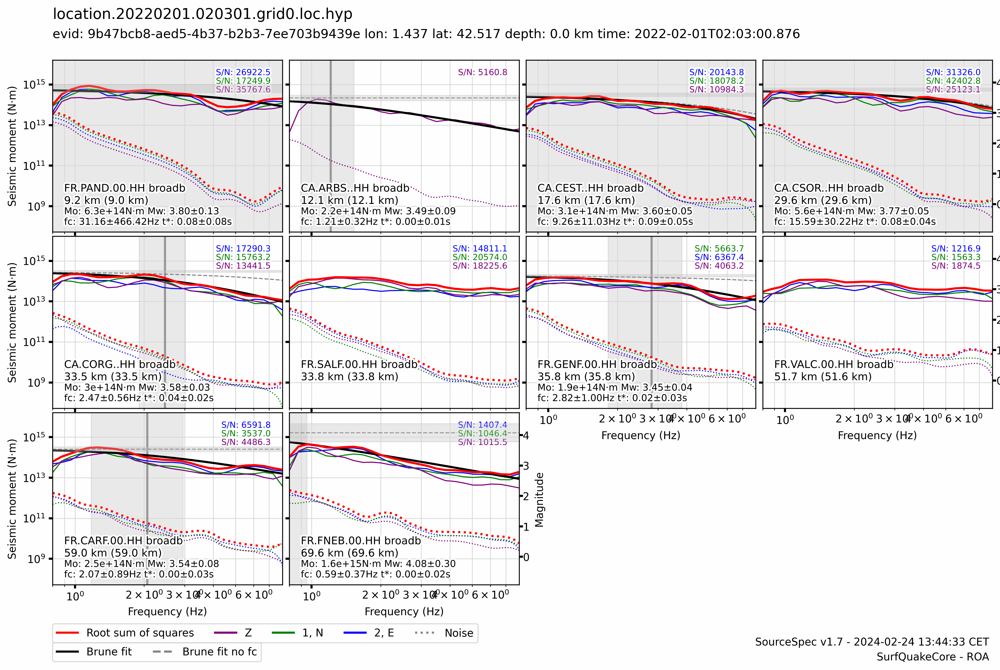
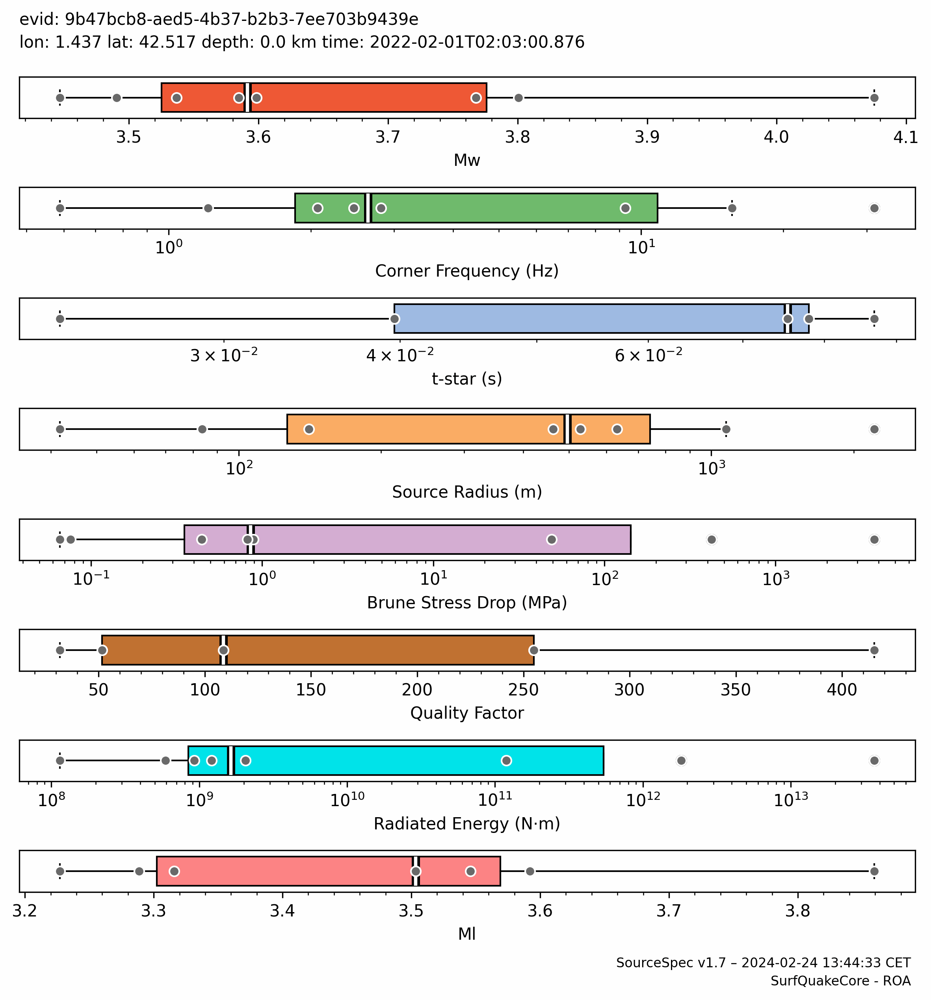
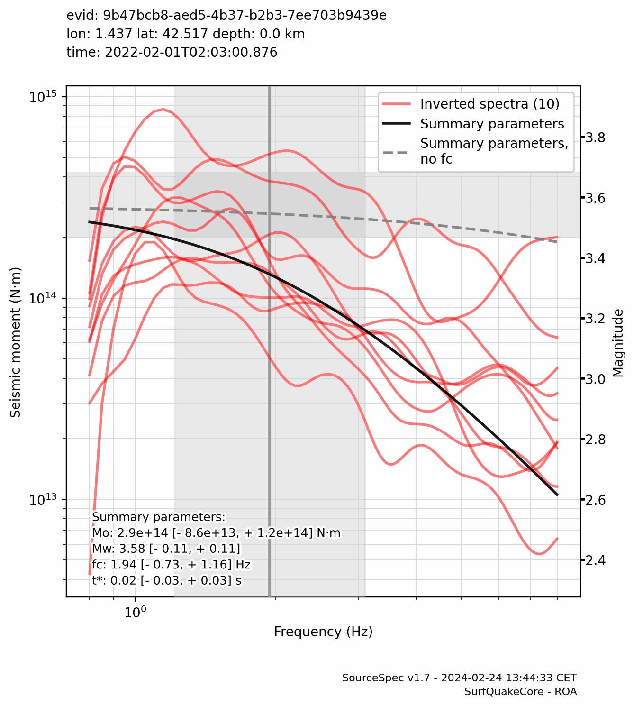

Event Summary
| Event ID: | 9b47bcb8-aed5-4b37-b2b3-7ee703b9439e |
|---|---|
| Longitude: | 1.437 °E |
| Latitude: | 42.517 °N |
| Depth: | 0.0 km |
| Origin Time: | 2022-02-01T02:03:00.876284Z |
| Moment Magnitude: | 3.58 [- 0.11, + 0.11] |
| Corner Frequency: | 1.940 [- 0.727, + 1.163] Hz |
Traces

Spectra (1 of 3)

Spectra (2 of 3)

Spectra (3 of 3)

Inversion Information
| Algorithm: | Truncated Newton |
|---|---|
| Weighting: | Noise weighting |
| t-star-0: | 0.045 s |
| Invert t-star-0: | False |
| t-star-0 variability: | 10.0 % |
| t-star min, max: | [0.0, 0.1] s |
| fc min, max: | - |
| Qo min, max: | - |
Summary Spectral Parameters
Note: the highlighted column indicates the reference parameters used for Event Summary and Map Plots.
| Mean (1 sigma) |
Weighted Mean (1 sigma) |
Percentiles (50%, [15.9%, 84.1%]) |
|
|---|---|---|---|
| Mw | 3.66 ±0.19 |
3.58 ±0.11 |
3.59 -0.10 +0.21 |
| Seismic Moment (N·m) | 3.202e+14 -1.117e+14 +1.715e+14 |
2.889e+14 -8.616e+13 +1.228e+14 |
3.001e+14 -8.489e+13 +2.673e+14 |
| Corner Frequency (Hz) | 2.837 -1.837 +5.214 |
1.940 -0.727 +1.163 |
2.467 -1.284 +7.080 |
| t-star (s) | 0.038 ±0.035 |
0.017 ±0.025 |
0.031 -0.031 +0.046 |
| Qo | 172.5 ±144.3 |
75.7 ±48.4 |
108.8 -64.3 +204.4 |
| Source Radius (m) | 260.644 -174.815 +530.879 |
639.557 -217.590 +329.792 |
462.769 -381.063 +188.570 |
| Brune Stress Drop (MPa) | 6.567e-01 -5.834e-01 +5.230e+00 |
4.446e-01 -3.062e-01 +9.834e-01 |
6.325e-01 -5.585e-01 +1.017e+01 |
| Radiated Energy (N·m) | 1.628e+09 -1.433e+09 +1.196e+10 |
1.068e+09 -5.763e+08 +2.509e+10 |
|
| Ml | 3.48 ±0.20 |
3.50 -0.22 +0.10 |
Spectral Parameter Box Plots

Stacked Spectra

Station Parameters
Note: outliers are greyed out
|
|
|
|
Frequency (Hz) |
(s) |
|
Moment (N·m) |
stress drop (MPa) |
radius (m) |
Energy (N·m) |
Distance (km) |
(°) |
|
|---|---|---|---|---|---|---|---|---|---|---|---|---|
| CA.ARBS..HHH | broadb | |||||||||||
| CA.CEST..HHH | broadb | |||||||||||
| CA.CORG..HHH | broadb | |||||||||||
| CA.CSOR..HHH | broadb | |||||||||||
| FR.CARF.00.HHH | broadb | |||||||||||
| FR.FNEB.00.HHH | broadb | |||||||||||
| FR.GENF.00.HHH | broadb | |||||||||||
| FR.PAND.00.HHH | broadb |
Files
| Configuration: | 9b47bcb8-aed5-4b37-b2b3-7ee703b9439e.ssp.conf |
|---|---|
| Output: | 9b47bcb8-aed5-4b37-b2b3-7ee703b9439e.ssp.yaml |
| Log: | 9b47bcb8-aed5-4b37-b2b3-7ee703b9439e.ssp.log |